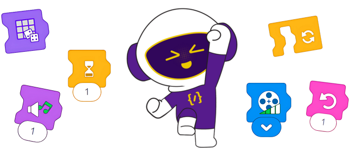

Buổi 20:
Tổng kết khóa học & Chuẩn bị dự án cho buổi tổng kết
Mục tiêu bài học
- ✔️ Ôn lại chức năng chính của các khối lệnh trong LEGO Spike Essential: Motor, Sound, Light, Movement và Control.
- ✔️ Phân biệt vai trò và cách sử dụng từng khối trong lập trình robot: điều khiển chuyển động, phát âm thanh, phát sáng, điều kiện và vòng lặp.
- ✔️ Ghi nhớ cách kết nối phần cứng (hub, động cơ, cảm biến) với phần mềm để robot hoạt động đồng bộ.
- ✔️ Hiểu sự kết hợp giữa phần cứng và phần mềm trong mô hình LEGO để tạo hiệu ứng đồng bộ.
- ✔️ Ôn lại cấu tạo và nguyên lý hoạt động của các mô hình đã thực hiện trong suốt khóa học.
- ✔️ Thực hành lắp ráp lại một mô hình đã học (ví dụ: nhạc cụ, phương tiện, robot phản xạ…) theo nhóm hoặc cá nhân.
- ✔️ Lập trình hoàn chỉnh mô hình sử dụng kết hợp Motor Block, Sound Block, Light Block và Control Block.
- ✔️ Tinh chỉnh thời gian, tốc độ, hướng, âm lượng, ánh sáng để mô hình hoạt động mượt và đồng bộ.
- ✔️ Kiểm tra lỗi và hoàn thiện chương trình để chuẩn bị cho phần trình diễn tổng kết.
- ✔️ Hợp tác trong nhóm để cùng hoàn thiện mô hình trình diễn cuối khóa.
- ✔️ Suy luận logic để sử dụng các khối điều khiển (Control Block) như lặp, điều kiện, chờ, đúng mục đích.
- ✔️ Vận dụng tư duy mô hình hóa để kết hợp chuyển động – âm thanh – ánh sáng vào một kịch bản hợp lý.
- ✔️ Phân tích hiệu quả hoạt động của mô hình: Có đúng theo ý tưởng không? Có thể cải tiến gì không?
- ✔️ Tự đánh giá và điều chỉnh mô hình theo tiêu chí: thẩm mỹ – kỹ thuật – biểu diễn.
- ✔️ Tự tin tổng kết kiến thức và thể hiện mô hình sáng tạo trong buổi trình diễn cuối khóa.
- ✔️ Hợp tác tích cực, hỗ trợ bạn cùng nhóm để hoàn thành sản phẩm chất lượng.
- ✔️ Sẵn sàng chia sẻ ý tưởng, lắng nghe góp ý từ bạn và giáo viên.
- ✔️ Chủ động ghi lại trải nghiệm học tập, quá trình thử nghiệm và bài học rút ra.
- ✔️ Hào hứng với công nghệ, sẵn sàng khám phá các chủ đề nâng cao sau khóa học.
Giới thiệu nội dung bài học
-
Tổng ôn kiến thức
-
Lên ý tưởng mô hình
-
Thực hành tự do
-
Chuẩn bị buổi tổng kết
Khối lệnh đèn (Light Blocks)
-
🧑💻 Khối lệnh đèn 3x3

Mô tả: Khối lệnh này giúp bạn thiết lập họa tiết hiển thị trên ma trận đèn 3x3.
- Nhấn mũi tên trắng để mở bảng thiết lập.
- Chọn màu và tô vào lưới 3x3 lớn.
- Lưới nhỏ trái: Xóa họa tiết.
- Lưới nhỏ phải: Tô tất cả ô bằng một màu.
- Khối tạm dừng 0.2 giây trước khi thực hiện tiếp.
Ví dụ:

Chương trình này làm Ma trận đèn 3x3 thay đổi nhanh giữa ba họa tiết khác nhau, cách nhau 0.2 giây.
-
🧑💻 Khối lệnh đèn ngẫu nhiên 3x3

Mô tả: Mỗi lần chạy, ma trận sẽ sáng lên với màu ngẫu nhiên mới.
- Thời gian giữa các lần đổi màu là 0.2 giây.
Ví dụ:

Chương trình này làm đèn liên tục sáng với các màu ngẫu nhiên, mỗi màu hiển thị trong 0.2 giây.
Khối lệnh âm thanh (Sound Blocks)
-
🔊 Khối Âm Thanh Động Vật (Animal Sound Block)

Mô tả: Khối này sẽ phát ra âm thanh của một loài động vật. Có thể chọn từ 8 âm thanh động vật khác nhau.
- Để chọn âm thanh, hãy nhấn vào mũi tên trắng hướng xuống trên khối, sau đó chọn một con số trong menu.
- Nếu chọn biểu tượng xúc xắc, khối sẽ phát một âm thanh động vật ngẫu nhiên mỗi lần được chạy.
Ví dụ

Chương trình này sẽ phát âm thanh động vật số 5.
-
🔉 Khối Hiệu Ứng Âm Thanh (Sound Effect Block)

Mô tả: Khối này sẽ phát một hiệu ứng âm thanh. Có 8 hiệu ứng khác nhau để lựa chọn.
- Để chọn hiệu ứng âm thanh, hãy nhấn vào mũi tên trắng trên khối, sau đó chọn một con số trong menu.
- Nếu chọn biểu tượng xúc xắc, mỗi lần chạy khối sẽ phát ra một hiệu ứng âm thanh ngẫu nhiên.
Ví dụ

Chương trình này sẽ phát hiệu ứng âm thanh số 5.
-
🎵 Khối Phát Nhạc (Music Block)

Mô tả: Khối này sẽ phát một bản nhạc thông qua thiết bị.
- Để chọn bản nhạc sẽ phát, hãy nhấn vào mũi tên trắng trên khối và chọn một con số trong menu.
- Nếu chọn biểu tượng xúc xắc, mỗi lần chạy khối sẽ phát một bản nhạc ngẫu nhiên.
Ví dụ

Chương trình này sẽ phát bản nhạc số 5.
-
🎤 Khối Ghi Âm (Record Sound Block)


Mô tả: Khối này cho phép bạn ghi lại âm thanh của chính mình và lưu lại thành một khối mới để sử dụng trong chương trình.
- Để ghi âm mới, nhấn vào khối "Record Sound" để mở menu ghi âm.
- Nhấn nút ghi hình tròn ở giữa để bắt đầu ghi âm. Khi hoàn tất, nhấn nút dừng, rồi nhấn dấu kiểm để lưu ghi âm.
- Bản ghi âm của bạn sẽ được lưu thành một khối mới.
- Để chỉnh sửa hoặc xóa bản ghi, nhấn chuột phải vào khối trong bảng khối. Trên thiết bị cảm ứng, giữ chạm để mở menu tương tự.
- Lưu ý: nếu khối ghi âm đã được kéo vào vùng lập trình, bạn không thể xóa nó từ bảng khối.
Ví dụ

Chương trình này sẽ phát bản ghi âm số 1, sau đó phát tiếp bản ghi âm số 2.
Khối lệnh động cơ (Motor Blocks)
-
🧑💻 Khối lệnh đặt tốc độ

Mô tả: Khối này cho phép thay đổi tốc độ của động cơ kết nối với Hub.
- Các mức tốc độ: 15%, 40%, 70%, 100% (hiển thị bằng vạch xanh lá).
- Tác dụng từ thời điểm đặt khối, không ảnh hưởng tới động cơ đang chạy.
- Mặc định: 40% nếu chưa đặt tốc độ.
Cách sử dụng: Đặt khối này trước khối chạy động cơ.
Ví dụ:

Động cơ xoay 1 vòng với tốc độ mặc định (40%), sau đó xoay ngược với tốc độ 100%.
-
🧑💻 Khối động cơ ngược chiều kim đồng hồ

Mô tả: Khối lệnh này giúp động cơ xoay ngược chiều kim đồng hồ. Tốc độ có thể thay đổi bằng khối lệnh "Đặt tốc độ động cơ".
- Nhấn vào mũi tên trắng trên khối để mở bảng tùy chọn.
- Dùng nút + hoặc - để tăng/giảm số vòng quay đầy đủ.
- Dùng núm xoay để điều chỉnh theo đơn vị 0.25 vòng.
Cách sử dụng: Kết hợp khối này với khối “Đặt tốc độ” để điều khiển hướng và số vòng quay mong muốn.
Ví dụ:

Chương trình này sẽ làm động cơ xoay ngược chiều kim đồng hồ trong 2.5 vòng.
-
🧑💻 Khối động cơ theo chiều kim đồng hồ

Mô tả: Khối lệnh này giúp động cơ xoay theo chiều kim đồng hồ. Tốc độ có thể thay đổi bằng khối lệnh “Đặt tốc độ động cơ”.
- Nhấn vào mũi tên trắng trên khối để mở bảng tùy chọn.
- Dùng nút + hoặc - để tăng/giảm số vòng quay đầy đủ.
- Dùng núm xoay để điều chỉnh theo đơn vị 0.25 vòng.
Cách sử dụng: Đặt khối này sau khối “Đặt tốc độ” để điều khiển số vòng quay theo chiều mong muốn.
Ví dụ:

Chương trình này sẽ làm động cơ xoay theo chiều kim đồng hồ trong 2.5 vòng.
-
🧑💻 Khối dừng động cơ

Mô tả: Khối lệnh này dùng để dừng tất cả các động cơ đang chạy trên Hub.
- Ngay khi khối được thực thi, mọi động cơ đang hoạt động sẽ dừng lại lập tức.
- Không cần chỉ định cổng – khối áp dụng cho tất cả các động cơ đã kết nối.
Cách sử dụng: Đặt khối này sau các khối chạy động cơ để kết thúc hành động một cách rõ ràng.
Khối lệnh chuyển động (Movement Blocks)
-
🧑💻 Khối lệnh điều chỉnh tốc độ di chuyển (Movement Speed Block)

Mô tả: Khối lệnh này dùng để thay đổi tốc độ di chuyển của Chú Chuột (mô hình robot dùng 2 động cơ giống nhau).
- Tốc độ hiển thị bằng số vạch màu xanh: 15%, 40%, 70%, hoặc 100%.
- Khối này phải được đặt trước các khối điều khiển chuyển động khác để có hiệu lực.
- Không làm thay đổi động cơ đang chạy và không tự khởi động motor.
- Nhấn mũi tên trắng trên khối để chọn mức tốc độ phù hợp.
-
🧑💻 Khối lệnh di chuyển về phía trước (Move Forward Block)

Mô tả: Khối lệnh này giúp Chú Chuột di chuyển về phía trước theo số vòng quay của bánh xe.
- Chú Chuột là mô hình LEGO sử dụng hai động cơ giống nhau để di chuyển.
- Để thay đổi số vòng quay, hãy nhấn vào con số trên khối lệnh.
- Ví dụ: nhập số 1 sẽ khiến mỗi bánh xe quay đúng 1 vòng.
-
🧑💻 Khối lệnh di chuyển lùi (Move Backward Block)

Mô tả: Khối lệnh này giúp Chú Chuột di chuyển lùi về phía sau theo số vòng quay bánh xe.
- Chú Chuột là mô hình LEGO sử dụng hai động cơ giống nhau để di chuyển.
- Để thay đổi số vòng quay, hãy nhấn vào con số trên khối lệnh.
- Ví dụ: nhập số 1 sẽ khiến mỗi bánh xe quay đúng 1 vòng lùi.
-
🧑💻 Khối lệnh quay ngược chiều kim đồng hồ (Turn Counterclockwise Block)

Mô tả: Khối lệnh này giúp Chú Chuột quay ngược chiều kim đồng hồ.
- Chú Chuột là mô hình LEGO sử dụng hai động cơ giống nhau để di chuyển.
- Để điều chỉnh góc quay, hãy nhấn vào con số trên khối lệnh.
- Ví dụ: nhập số 1 sẽ khiến Chú Chuột quay 90 độ.
- Lưu ý: nếu thay đổi kích thước bánh xe hoặc khoảng cách giữa các bánh xe, góc quay thực tế sẽ thay đổi.
-
🧑💻 Khối lệnh quay cùng chiều kim đồng hồ (Turn Clockwise Block)

Mô tả: Khối lệnh này giúp Chú Chuột quay cùng chiều kim đồng hồ.
- Chú Chuột là mô hình LEGO sử dụng hai động cơ giống nhau để di chuyển.
- Để điều chỉnh góc quay, hãy nhấn vào con số trên khối lệnh và nhập số vòng quay mong muốn.
- Ví dụ: nhập số 1 có thể làm Chú Chuột quay khoảng 90 độ, tùy vào thiết lập mô hình.
- Lưu ý: nếu bạn thay đổi kích thước bánh xe hoặc khoảng cách giữa các bánh, góc quay thực tế sẽ bị ảnh hưởng.
Khối lệnh điều kiện (Control Blocks)
-
🧑💻 Khối lệnh chờ

Mô tả: Khối lệnh này giúp chương trình tạm dừng trong một khoảng thời gian nhất định trước khi tiếp tục thực hiện các khối tiếp theo.
- Thời gian chờ có thể thay đổi bằng cách nhấn vào số thời gian hiển thị trong khối.
- Thời gian được tính bằng giây.
Cách sử dụng: Đặt giữa các hành động để tạo độ trễ, hiệu ứng rõ ràng hơn (như chờ trước khi phát âm thanh, xoay động cơ,…).
Ví dụ:

Chương trình này sẽ phát âm thanh số 3, chờ 1 giây, rồi phát tiếp âm thanh số 1.
-
🧑💻 Khối lệnh vòng lặp

Mô tả: Khối lệnh này dùng để lặp lại các khối nằm bên trong nó một số lần nhất định.
- Số lần lặp có thể thay đổi bằng cách nhấn vào con số hiển thị trên khối.
- Giúp tiết kiệm khối và thực hiện hành động lặp lại một cách rõ ràng.
Cách sử dụng: Đặt các khối muốn lặp bên trong khối này. Rất hữu ích khi tạo hiệu ứng nhấp nháy, chuyển động lặp, v.v.
Ví dụ:

Chương trình này sẽ làm đèn nhấp nháy màu vàng 3 lần.
-
🧑💻 Khối vòng lặp vô hạn

Mô tả: Khối lệnh này sẽ lặp đi lặp lại mãi mãi tất cả các khối được đặt bên trong nó, cho đến khi chương trình dừng lại hoặc thiết bị bị tắt.
- Không cần đặt số lần – chương trình sẽ lặp vô hạn.
- Thường dùng để tạo hiệu ứng liên tục như phát nhạc, đèn chớp,…
Cách sử dụng: Đặt các khối hành động vào bên trong khối “Lặp mãi mãi” để thực hiện lặp liên tục.
Ví dụ:

Chương trình này sẽ phát bản nhạc số 3 liên tục mãi mãi.
-
🧑💻 Khối dừng vòng lặp

Mô tả: Khối lệnh này sẽ dừng tất cả các luồng chương trình (stacks) khác đang chạy, ngoại trừ chính luồng chứa khối lệnh này.
- Được dùng khi bạn muốn kết thúc các hành động đang diễn ra ở các phần khác trong chương trình.
- Khối này không dừng chương trình hiện tại, chỉ dừng các phần chạy song song khác.
Cách sử dụng: Đặt trong một luồng riêng để điều khiển dừng toàn bộ các luồng còn lại — thường đi kèm với cảm biến hoặc điều kiện đặc biệt.
Lên ý tưởng & thử nghiệm mô hình sáng tạo
-
Học viên thảo luận và hình thành ý tưởng:
💡 Học sinh làm việc nhóm để sáng tạo một mô hình robot bất kỳ (không giới hạn chủ đề).
✔️ Tự do lựa chọn: robot chơi nhạc, phương tiện thông minh, cánh tay cơ học, sân khấu biểu diễn, v.v…
✔️ Mỗi bạn đóng góp một phần: chuyển động, âm thanh, ánh sáng, hiệu ứng đặc biệt.
✔️ Lên phác thảo mô hình sơ bộ và ghi chú các bộ phận chính cần có. -
Thử nghiệm lắp ráp mô hình lần đầu:
🧱 Các nhóm bắt đầu dựng mô hình theo ý tưởng:
🔹 Gắn các thành phần cơ bản: khung, motor, hub, cánh tay chuyển động, bệ đỡ…
🔹 Lắp cảm biến nếu cần (chạm, khoảng cách) để mô hình có thể phản ứng.
🔹 Gắn dây nối gọn gàng, kiểm tra độ ổn định và hướng lắp các trục.
✔️ Đây là phiên bản thử – chưa yêu cầu hoàn thiện chi tiết. -
Lập trình thử và áp dụng khối lệnh đã học:
🎯 Áp dụng toàn bộ các khối lệnh đã học để kiểm tra mô hình:
✔️Movement Blocks– cho chuyển động tiến/lùi/xoay.
✔️Motor Control– điều chỉnh tốc độ, thời gian, vị trí.
✔️Sound Blocks– phát âm thanh theo hành động.
✔️Light Blocks– thêm đèn LED khi mô hình biểu diễn hoặc chuyển động.
✔️Control Blocks– sử dụng lặp, điều kiện, chờ thời gian để mô hình phản ứng logic.
✔️ Có thể kết hợp cảm biến để kích hoạt hành vi phức tạp. -
Chuẩn bị cho buổi học tổng kết – hoàn thiện mô hình:
📦 Sau khi thử nghiệm, các nhóm sẽ:
✔️ Rút kinh nghiệm từ phần lắp ráp chưa ổn định hoặc hành vi chưa đúng ý tưởng.
✔️ Ghi lại phiên bản lập trình đã thử – thêm ghi chú cần cải tiến.
✔️ Chuẩn bị bản nâng cấp mô hình để trình bày ở buổi sau với tính năng đầy đủ hơn.
🔔 Buổi học sau: Hoàn thiện mô hình – lập trình trọn vẹn và trình diễn chính thức như một sản phẩm cuối khóa.
Tổng kết buổi học
Loading question...Score: 0 / 5
Các cuộc thi về Robot